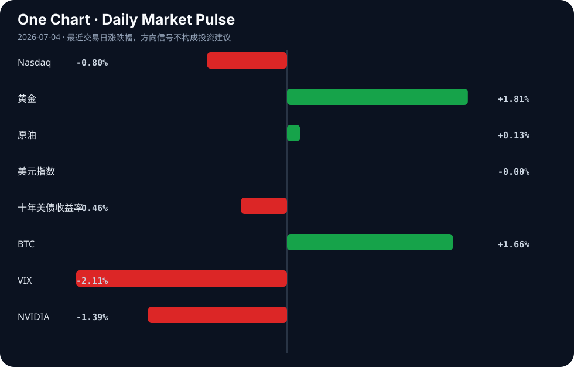

Daily Intelligence
2026-07-04｜Saturday
Today’s Thesis｜今日一句话
AI 资本开支正从无差别扩张转向内部约束与推理变现，而全球宏观流动性则在欧美央行政策分化中寻找新平衡。
① Executive Summary｜30 秒
- AI：大模型同质化加剧，AI 交易失去关键信号 [A4]，资本从训练军备竞赛转向推理变现与内部成本控制 [A3][A9]。
- 商业：制造业加速 AI 深度融合以降本增效 [B23]，新能源汽车政策红利持续调整以引导长期产业布局 [B20]。
- 宏观：欧央行拟提高最低准备金率加速流动性常态化 [B2]，与美联储政策路径分化加剧，避险资产获青睐 [B12]。
② AI Daily
投资分化：从无约束扩张到精细化管理
What Happened
马斯克限制特斯拉员工 AI 开支 [A3]，AI 交易失去关键市场信号 [A4]；与此同时，字节跳动被爆今年 AI 支出将超 2000 亿人民币 [A18]。
Why It Matters
这标志着行业告别“不计成本堆算力”的第一阶段。当开源与闭源模型性能趋近（Meta 宣称新 LLM 追上 OpenAI 旗舰 [A11]），边际算力投入的 ROI 急剧递减，企业必须向内要效率。
Second-order Effect
算力预算向推理侧与垂直应用倾斜 → 通用大模型融资遇冷 → 垂直场景推理集群与端侧算力基础设施供应商受益。 因果链：模型同质化 [A11] → 训练边际收益递减 → 资本开支约束 [A3] & 信号失效 [A4] → 推理变现成唯一出路 [A9]
应用层觉醒：同质化下的“无聊”与重构
What Happened
社区涌现“AI Is Boring”的讨论，认为大家都在做同样的东西 [A14]；同时，针对 AI 代码重复的确定性防护栏发布 [A15]，无工作流引擎的持久智能体架构出现 [A6]。
Why It Matters
底层模型的同质化迫使创业者逃离套壳，转向更深层的系统重构。防护栏与去工作流化意味着 AI 正从“玩具对话”走向“严肃软件工程”，可靠性与架构解耦成为核心。
Second-order Effect
AI 工程化门槛降低 → 传统 SaaS 加速被替代 → 对“确定性”和“容错性”的工具需求爆发。 因果链：底层能力趋同 [A14] → 套壳应用失效 → 架构重构（去工作流/加防护栏）[A6][A15] → AI Native Work 兴起 [A17]
伦理与就业的硬着陆
What Happened
美国一中学教师使用 AI 从学生照片生成儿童色情内容被起诉 [A1]；研究指出最易受 AI 冲击的并非工业机器人，而是翻译、作家、顾问等语言工作者 [A12]。
Why It Matters
技术滥用与白领就业替代同时发生，将极大加速监管立法进程。语言类工作的脆弱性打破了“AI 先替代蓝领”的传统假设，引发社会阻力重估。
Second-order Effect
语言类职业加速萎缩 → 相关行业人力成本断崖下跌 → 极端案例倒逼全球 AI 生成内容溯源与水印立法落地。
③ Business Daily
制造业
AI 革命正渗透至最传统的泡沫保温材料生产领域，推动行业向智能制造与可持续性转型 [B23]。这表明 AI 降本已跨越半导体与软件边界，进入重资产、低毛利的通用制造，其核心机制是优化能耗与良率，而非单纯替代人力。
汽车
中国三部门调整节能汽车与新能源汽车车船税优惠政策 [B20]，政策从普惠补贴转向精细化的税收调节。结合马斯克对特斯拉 AI 开支的严控 [A3]，行业正面临双重挤压：前端 AI 研发需降本，后端整车销售需适应政策红利退坡后的市场化竞争。
能源
美国能源企业致力于构建国内氦气和碳管理平台 [B15]，液化空气集团也因工业气体需求演变更新投资者展望 [B3]。在 AI 算控趋严与清洁经济转型 [B8] 的双重背景下，能源基建的重点从单一开采转向碳循环与特种气体（如半导体制造所需的氦气）的供应链安全。
④ Macro Observation｜机制分析
世界正在发生什么？ 全球流动性格局正在分化。欧央行正考虑将最低准备金率提高至 2%，加速欧元区流动性常态化 [B2]；而美联储降息预期推迟，两者政策路径严重背离 [B4]。同时，印尼出现贸易逆差 [B24]，新兴市场脆弱性显现。
为什么发生？ 欧元区试图吸收疫情期间注入的超额流动性，压降通胀粘性；美国劳动力市场基本面尚可 [B14]，暂无急迫宽松必要。政策错位导致套利资本重新定价汇率与主权信用风险。
资本如何流动？ 资本正从高风险长 Duration 资产向避险资产转移。黄金因美联储降息押注缓解而攀升 [B12]，欧洲股市（STOXX 600）因内部流动性收缩预期而在创纪录后面临回调压力 [B7]。新兴市场货币（如印尼卢比）承压 [B24]。推断：在欧央行抽水与美联储不降息的组合下，跨大西洋套利交易将重返舞台。
接下来关注什么？ 下周 FOMC 会议纪要发布及美联储官员讲话 [B17]，将验证“高利率维持更久”的共识是否固化。同时需追踪欧央行提高准备金率对欧元区银行信贷收缩的实际冲击力度。
⑤ Signal Dashboard
| 指标 | 最新值 | 今日 | 信号 |
|---|---|---|---|
| Nasdaq | 25,832.67 | ↓ -0.80% | 风险偏好降温 |
| 黄金 | 4,187.30 | ↑ +1.81% | 避险/通胀对冲增强 |
| 原油 | 68.78 | ↑ +0.13% | 供需平衡 |
| 美元指数 | 100.86 | → -0.00% | 中性 |
| 十年美债收益率 | 4.37 | ↓ -0.46% | 利好久期资产 |
| BTC | 62,507.09 | ↑ +1.66% | 风险偏好改善 |
| VIX | 15.81 | ↓ -2.11% | 风险偏好改善 |
| NVIDIA | 194.83 | ↓ -1.39% | 风险偏好降温 |
⑥ Deep Insight
AI 资本开支的分化与“无聊”时代的推理变现
近期 AI 领域释放出看似极其矛盾的信号：一面是马斯克限制特斯拉员工的 AI 开支 [A3]，Bloomberg 宣称 AI 交易正在失去其关键的市场信号 [A4]；另一面，字节跳动被爆今年 AI 支出将超 2000 亿人民币 [A18]。这种剧烈分化并非简单的行业衰退或局部泡沫破裂，而是标志着 AI 产业从“无差别军备竞赛”正式迈入“约束下的推理变现”阶段。
当 Meta 首席科学家宣称其即将推出的 LLM 已追上 OpenAI 的旗舰模型 [A11]，且技术社区开始大面积抱怨“AI 很无聊，大家都在做同样的东西” [A14] 时，底层大模型的同质化已成为不可逆的事实。同质化意味着训练端的边际智力收益急剧递减，此时继续无上限地投入资本预训练是不理性的。马斯克的限制举措 [A3] 和宏观 AI 交易信号失效 [A4] 正是对这一微观与宏观趋势的精准映射。
然而，同质化恰恰是应用层繁荣与商业闭环的前提。当模型能力趋于一致且开源生态追平闭源，竞争的主战场必然从“谁的模型更聪明”转向“谁的推理更便宜、谁的业务嵌入更深”。这正是“AI 推理显然是有利可图的” [A9] 这一判断的底层逻辑。字节的 2000 亿天量支出 [A18]，推断其重心已非单纯的底层预训练，而是围绕推理算力基础设施、垂直场景（如短视频推荐与生成）的护城河建设。
这种从训练到推理的资本转移，将引发深刻的二次效应：硬件需求结构将从极高端的训练 GPU 向高性价比的推理 ASIC 倾斜；软件架构将从脆弱的工作流引擎转向持久化智能体 [A6]；同时，由于 AI 生成内容的泛滥，确定性防护栏（如防代码重复 [A15]）和“无 AI”的逆向需求 [A2] 将成为新的创业利基。而在劳动力端，同质化模型的规模化部署将首当其冲冲击翻译、作家等语言工作者 [A12]，但极端滥用案例（如利用 AI 生成儿童色情 [A1]）将倒逼监管介入，推高合规成本。
反方观点：若推理成本下降速度远不及预期，或应用端无法跑通除降本外的真实创收商业模式，当前基于“推理变现”的巨额支出将变成无法收回的沉没成本，引发比信号失效更深的资本寒冬。
证伪条件：1. 头部大厂在下个季度大幅削减推理算力预算；2. 开源模型性能停滞，无法对闭源形成有效的价格压迫；3. AI 应用在核心行业的渗透率见顶，企业 IT 预算中 AI 占比不增反降。
⑦ Tomorrow Watch
1. 美联储 FOMC 会议纪要发布，寻找“高利率维持更久”的措辞证据 [B17]。
2. 欧央行关于提高最低准备金率至 2% 的正式决议或官员吹风 [B2]。
3. Meta 宣称追上 OpenAI 旗舰模型的新 LLM 发布及第三方独立基准测试结果 [A11]。
4. 字节跳动 2000 亿 AI 支出在资本市场的传导效应（算力产业链订单验证）[A18]。
5. 印尼贸易逆差对印尼卢比汇率的持续冲击及东盟新兴市场资本外流压力 [B24]。
⑧ One Chart

图表显示 Nasdaq 与 NVIDIA 同步下行，而黄金与 BTC 呈现上行，VIX 回落。这表明传统科技股权重资产的回调与避险资产走强并存，但加密货币与 VIX 的风险偏好信号出现短暂分歧，暗示市场在宏观政策分化期正处于再平衡的震荡区间，相关性并非单向因果。⑨ Quote of the Day
“It is better to be roughly right than precisely wrong.”
— John Maynard Keynes
⑩ Action Items｜今天值得思考什么
1. 追踪 AI 推理算力需求在财报季的占比变化，验证训练向推理转移的资本逻辑 [A9]。
2. 验证 欧央行提高准备金率对欧元区银行同业拆借利率的实际冲击幅度 [B2]。
3. 比较 字节跳动与特斯拉在 AI 开支上的截然相反的策略，分析其业务底层逻辑差异 [A3][A18]。
4. 关注 语言类职业（翻译、文案、咨询）的招聘数据变化，确认 AI 替代的真实速率 [A12]。
5. 思考 在 AI 同质化时代 [A14]，传统宏观研究框架应如何重构以适应非线性冲击 [B13]。
信息边界
本报告事实部分严格限定于用户提供的 2026 年 7 月 3 日聚合新闻源。宏观与市场数据反映的是最近交易日的收盘或切片状态，存在时滞。部分新闻源自二次聚合（如 Google News），核心判断建议读者回到原始链接验证。推断部分已明确标注，不构成投资建议。
Sources
AI
- A1：Libertyville middle school teacher charged with using AI to make child porn from pictures of students - CBS News — Google News · AI
- A2：Coding without AI: a revolutionary new way to work — Hacker News · AI
- A3：马斯克限制特斯拉员工AI开支 - 新浪财经 — Google News · AI 中文
- A4：AI Trade Is Losing One of Its Key Signals — Hacker News · AI
- A6：Show HN: Durable AI agents without the workflow engine — Hacker News · AI
- A9：AI inference is obviously profitable — Hacker News · AI
- A11：Meta AI chief says their coming LLM has caught up with OpenAI's flagship model — Hacker News · AI
- A12：The list of jobs most at risk from artificial intelligence is surprising, as it doesn't start with industrial robots, but rather with translators, writers, historians, call center agents, consultants, and other professionals who make their living through language - OkDiario — Google News · AI
- A14：AI Is Boring — Hacker News · AI
- A15：Deterministic Guardrails Against AI Code Duplication — Hacker News · AI
- A17：Adapt: AI Native Work — Hacker News · AI
- A18：【早报】字节被爆今年AI支出将超2000亿；我国第四代自主超导量子计算机上线 - 财联社 — Google News · AI 中文
Business & Macro
- B2：ECB Weighs Raising Minimum Reserves to 2%, Speeding Eurozone Liquidity Normalisation and Pressuring Swap Spreads - VT Markets — Google News · Markets Policy
- B3：Air Liquide outlook for investors as industrial gas demand evolves - Ad-hoc-news.de — Google News · Technology Business
- B4：Euro Faces Limited Upside As ECB And Fed Policy Paths Diverge: ABN AMRO - Bitcoin World — Google News · Markets Policy
- B7：European markets close higher as STOXX 600 hits record, FTSE posts weekly gains - Invezz — Google News · Markets Policy
- B8：Cleaner economy shift can create more jobs compared to polluting sectors: World Bank - India's News.Net — Google News · Global Economy
- B12：Gold Climbs as Fed Rate Bets Ease: ETFs That Are Worth Watching - TradingView — Google News · Markets Policy
- B13：张继强：AI颠覆传统宏观研究框架 原有经济分析体系迎来重构 - 新浪财经 — Google News · 行业
- B14：Gilles Moec, Chief Economist of AXA Group, believes that the fundamentals of the US labor market are acceptable, although it remains uncertain whether there will be divergence in interest rate policy. - Bitget — Google News · Markets Policy
- B15：Interview : U.S. Energy CEO Ryan Smith on Building a Domestic Helium and Carbon Management Platform - ChemAnalyst — Google News · Global Economy
- B17：Next Week Preview: Fed Speech and FOMC Minutes Release - Bitget — Google News · Markets Policy
- B20：三部门调整节能汽车、新能源汽车车船税优惠政策 - 经济参考报 — Google News · 行业
- B23：AI Revolution Transforms Foam Insulation Production as Industry Shifts Toward Smart Manufacturing and Sustainability - GlobeNewswire — Google News · Technology Business
- B24：Indonesia's Trade Balance Is in Deficit-What Impact Will This Have on the Rupiah? Check Out the Latest Analysis - digivestasi.com — Google News · Markets Policy